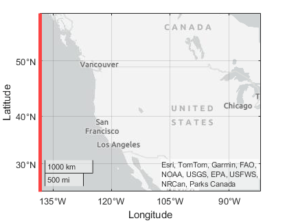
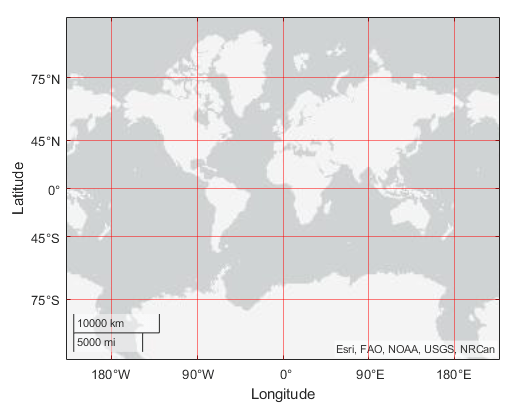
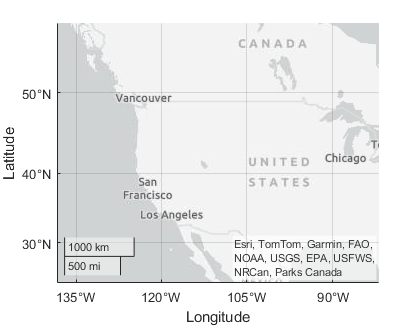

GeographicAxes Properties
Geographic axes appearance and behavior
GeographicAxes properties control the
appearance and behavior of a GeographicAxes object. By
changing property values, you can modify certain aspects of the geographic axes. Set
axes properties after plotting since some graphics functions reset axes
properties.
Some graphics functions create geographic axes when plotting. Use
gca to access the newly created axes. To create a geographic axes
with default values for all properties, use the geoaxes function.
gx = geoaxes;
Maps
Map on which to plot data, specified as one of the values listed in the table. Six of the basemaps are tiled data sets created using Natural Earth. Five of the basemaps are high-zoom-level maps hosted by Esri®.
|
|
Map designed to provide geographic context while highlighting user data on a light background. Hosted by Esri. |
|
Map designed to provide geographic context while highlighting user data on a dark background. Hosted by Esri. |
|
|
General-purpose road map that emphasizes accurate, legible styling of roads and transit networks. Hosted by Esri. |
|
Full global basemap composed of high-resolution satellite imagery. Hosted by Esri. |
|
|
General-purpose map with styling to depict topographic features. Hosted by Esri. |
|
Map that combines satellite-derived land cover data, shaded relief, and ocean-bottom relief. The light, natural palette is suitable for thematic and reference maps. Created using Natural Earth. |
|
|
Shaded relief map blended with a land cover palette. Humid lowlands are green and arid lowlands are brown. Created using Natural Earth. |
|
Terrain map in shades of gray. Shaded relief emphasizes both high mountains and micro-terrain found in lowlands. Created using Natural Earth. |
|
|
Two-tone, land-ocean map with light green land areas and light blue water areas. Created using Natural Earth. |
|
Two-tone, land-ocean map with gray land areas and white water areas. Created using Natural Earth. |
|
|
Two-tone, land-ocean map with light gray land areas and dark gray water areas. This basemap is installed with MATLAB®. Created using Natural Earth. |
Blank background that plots your data with a latitude-longitude grid, ticks, and labels. |


All basemaps except 'darkwater' require Internet access. The
'darkwater' basemap is included with MATLAB.
If you do not have consistent access to the Internet, you can download the basemaps created using Natural Earth onto your local system by using the Add-On Explorer. The five high-zoom-level maps are not available for download. For more about downloading basemaps and changing the default basemap on your local system, see Access Basemaps for Geographic Axes and Charts.
The basemaps hosted by Esri update periodically. As a result, you might see differences in your visualizations over time.
Alignment of boundaries and region labels are a presentation of the feature provided by the data vendors and do not imply endorsement by MathWorks®.
Data Types: char | string
This property is read-only.
Latitude limits of the map, returned as a two-element vector of the form
[latmin latmax]. Each element is in the range [–90,
90] degrees.
Change the latitude limits by using the geolimits function.
The latitude limits do not change when you resize the axes by resizing the figure window, except to adapt to changes in the aspect ratio of the map.
Example: [-85 85]
This property is read-only.
Longitude limits of map, returned as a two-element vector of the form
[lonmin lonmax].
Change the longitude limits by using the geolimits function.
The longitude limits do not change when you resize the axes by resizing the figure window, except to adapt to changes in the aspect ratio of the map.
Example: [-100 100]
Center point of map in latitude and longitude, specified as a two-element
vector of real, finite values of the form [center_latitude
center_longitude].
Example: [38.6292 -95.2520]
Selection mode for the map center, specified as one of these values:
'auto'— Object automatically selects the map center based on the range of data.'manual'— If you specify a value forMapCenter, the object sets this property to'manual'automatically.
Example: gx.MapCenterMode = 'auto'
Magnification level of map, specified as a real, finite, numeric scalar
from 0 through 25, inclusive. The value is a base 2 logarithmic map scale.
Increasing the ZoomLevel value by one doubles the map
scale.
Selection mode for zoom level, specified as one of these values:
'auto'— Object selects the zoom level based on the range of data.'manual'— If you specify a value forZoomLevel, the object sets this property to'manual'automatically.
Example: gx.ZoomLevelMode = 'manual'
This property is read-only.
Scale bar, returned as a GeographicScalebar object. The
scale bar shows proportional distances on the map.
Change the appearance and behavior of the scale bar by setting properties
of the GeographicScalebar object. For example, this code
shows how to hide the scale
bar.
geoplot(1:10,1:10)
gx = gca;
gx.Scalebar.Visible = "off";For more information about the properties of
GeographicScalebar objects, see GeographicScalebar Properties.
Font
Ticks
Rulers
Latitude ruler, specified as a GeographicRuler object.
Use properties of the GeographicRuler object to control
the appearance and behavior of the axis ruler. For more information, see
GeographicRuler Properties.
This image shows the latitude axis line in red.

Example: latruler = gx.LatitudeAxis;
Example: gx.LatitudeAxis.TickLabelRotation =
45;
Longitude ruler, specified as a GeographicRuler object.
Use properties of the GeographicRuler object to control
the appearance and behavior of the axis ruler. For more information, see
GeographicRuler Properties.
This image shows the longitude axis line in red.

Example: lonruler = gx.LongitudeAxis;
Example: gx.LongitudeAxis.TickDirection =
'out';
Color of axis lines, tick values, and labels, specified as an RGB triplet, hexadecimal color code, color name, or short color name.
For a custom color, specify an RGB triplet or a hexadecimal color code.
An RGB triplet is a three-element row vector whose elements specify the intensities of the red, green, and blue components of the color. The intensities must be in the range
[0,1], for example,[0.4 0.6 0.7].A hexadecimal color code is a string scalar or character vector that starts with a hash symbol (
#) followed by three or six hexadecimal digits, which can range from0toF. The values are not case sensitive. Therefore, the color codes"#FF8800","#ff8800","#F80", and"#f80"are equivalent.
Alternatively, you can specify some common colors by name. This table lists the named color options, the equivalent RGB triplets, and the hexadecimal color codes.
| Color Name | Short Name | RGB Triplet | Hexadecimal Color Code | Appearance |
|---|---|---|---|---|
"red" | "r" | [1 0 0] | "#FF0000" |
|
"green" | "g" | [0 1 0] | "#00FF00" |
|
"blue" | "b" | [0 0 1] | "#0000FF" |
|
"cyan"
| "c" | [0 1 1] | "#00FFFF" |
|
"magenta" | "m" | [1 0 1] | "#FF00FF" |
|
"yellow" | "y" | [1 1 0] | "#FFFF00" |
|
"black" | "k" | [0 0 0] | "#000000" |
|
"white" | "w" | [1 1 1] | "#FFFFFF" |
|
"none" | Not applicable | Not applicable | Not applicable | No color |
This table lists the default color palettes for plots in the light and dark themes.
| Palette | Palette Colors |
|---|---|
Before R2025a: Most plots use these colors by default. |
|
|
|
You can get the RGB triplets and hexadecimal color codes for these palettes using the orderedcolors and rgb2hex functions. For example, get the RGB triplets for the "gem" palette and convert them to hexadecimal color codes.
RGB = orderedcolors("gem");
H = rgb2hex(RGB);Before R2023b: Get the RGB triplets using RGB =
get(groot,"FactoryAxesColorOrder").
Before R2024a: Get the hexadecimal color codes using H =
compose("#%02X%02X%02X",round(RGB*255)).
Note
Setting the AxisColor property automatically sets
the Color property in the
GeographicRuler and
GeographicScalebar objects to the same value. The
GeographicRuler object controls the behavior and
appearance of the rulers in the geographic axes. The
GeographicScalebar object controls the scale bar
in the geographic axes. Conversely, setting the Color
property in the GeographicRuler or
GeographicScalebar object does not automatically
set the AxisColor property in the axes object. To
prevent the axes property value from overriding the ruler or scale bar
property value, set the axes property value first, and then set the
ruler or scale bar property value.
Example: gx.AxisColor = [0 0 1];
Example: gx.AxisColor = 'b';
Example: gx.AxisColor = 'blue';
Example: gx.AxisColor = '#0000FF';
Grids
Visibility of the grid lines, specified as 'on' or
'off', or as numeric or logical 1
(true) or 0
(false). A value of 'on' is
equivalent to true, and 'off' is
equivalent to false. Thus, you can use the value of this
property as a logical value. The value is stored as an on/off logical value
of type matlab.lang.OnOffSwitchState.
'on'– Show grid lines.'off'– Do not show grid lines.
Example: gx.Grid = 'off';
Line style for grid lines, specified as one of the line styles in this table.
| Line Style | Description | Resulting Line |
|---|---|---|
'-' | Solid line |
|
'--' | Dashed line |
|
':' | Dotted line |
|
'-.' | Dash-dotted line |
|
'none' | No line | No line |
To display the grid lines, use the grid
on command or set the Grid property to
'on'.
Example: gx.GridLineStyle = '--'
Color of grid lines, specified as an RGB triplet, a hexadecimal color code, a color name, or a short color name.
For a custom color, specify an RGB triplet or a hexadecimal color code.
An RGB triplet is a three-element row vector whose elements specify the intensities of the red, green, and blue components of the color. The intensities must be in the range
[0,1], for example,[0.4 0.6 0.7].A hexadecimal color code is a string scalar or character vector that starts with a hash symbol (
#) followed by three or six hexadecimal digits, which can range from0toF. The values are not case sensitive. Therefore, the color codes"#FF8800","#ff8800","#F80", and"#f80"are equivalent.
Alternatively, you can specify some common colors by name. This table lists the named color options, the equivalent RGB triplets, and the hexadecimal color codes.
| Color Name | Short Name | RGB Triplet | Hexadecimal Color Code | Appearance |
|---|---|---|---|---|
"red" | "r" | [1 0 0] | "#FF0000" |
|
"green" | "g" | [0 1 0] | "#00FF00" |
|
"blue" | "b" | [0 0 1] | "#0000FF" |
|
"cyan"
| "c" | [0 1 1] | "#00FFFF" |
|
"magenta" | "m" | [1 0 1] | "#FF00FF" |
|
"yellow" | "y" | [1 1 0] | "#FFFF00" |
|
"black" | "k" | [0 0 0] | "#000000" |
|
"white" | "w" | [1 1 1] | "#FFFFFF" |
|
"none" | Not applicable | Not applicable | Not applicable | No color |
This table lists the default color palettes for plots in the light and dark themes.
| Palette | Palette Colors |
|---|---|
Before R2025a: Most plots use these colors by default. |
|
|
|
You can get the RGB triplets and hexadecimal color codes for these palettes using the orderedcolors and rgb2hex functions. For example, get the RGB triplets for the "gem" palette and convert them to hexadecimal color codes.
RGB = orderedcolors("gem");
H = rgb2hex(RGB);Before R2023b: Get the RGB triplets using RGB =
get(groot,"FactoryAxesColorOrder").
Before R2024a: Get the hexadecimal color codes using H =
compose("#%02X%02X%02X",round(RGB*255)).
For example, create a geographic axis object with red grid lines. Set the
GridAlpha property to 0.5 to increase
visibility.
gx = geoaxes;
gx.GridColor = 'r';
gx.GridAlpha = 0.5;
Example: gx.GridColor = [0 0 1];
Example: gx.GridColor = 'b';
Example: gx.GridColor = 'blue';
Example: gx.GridColor = '#0000FF';
Property for setting the grid color, specified as one of these values:
'auto'— Object automatically selects the color.'manual'— To set the grid line color for all directions, useGridColor.
Grid-line transparency, specified as a value in the range
[0,1]. A value of 1 means opaque
and a value of 0 means completely transparent.
Example: gx.GridAlpha = 0.5
Selection mode for the GridAlpha property, specified
as one of these values:
'auto'— Object selects the transparency value.'manual'— To specify the transparency value, use theGridAlphaproperty.
Example: gx.GridAlphaMode = 'auto'
Labels
Text object for the axes title. To add a title, set the String property of the text object. To change the title appearance, such as the font style or color, set other properties. For a complete list, see Text Properties.
ax = gca; ax.Title.String = 'My Title'; ax.Title.FontWeight = 'normal';
Alternatively, use the title function to add a title and control the appearance.
title('My Title','FontWeight','normal')
Note
This text object is not contained in the axes Children property, cannot be returned by findobj, and does not use default values defined for text objects.
Text object for the axes subtitle. To add a subtitle, set the String
property of the text object. To change its appearance, such as the font angle, set other
properties. For a complete list, see Text Properties.
ax = gca; ax.Subtitle.String = 'An Insightful Subtitle'; ax.Subtitle.FontAngle = 'italic';
Alternatively, use the subtitle
function to add a subtitle and control the
appearance.
subtitle('An Insightful Subtitle','FontAngle','italic')
Or use the title function, and specify two
character vector input arguments and two output arguments. Then set properties on the
second text object returned by the
function.
[t,s] = title('Clever Title','An Insightful Subtitle'); s.FontAngle = 'italic';
Note
This text object is not contained in the axes Children property, cannot be returned by findobj, and does not use default values defined for text objects.
Title and subtitle horizontal alignment with the plot box, specified as one of the values from the table.
TitleHorizontalAlignment Value | Description | Appearance |
|---|---|---|
'center' | The title and subtitle are centered over the plot box. |
|
'left' | The title and subtitle are aligned with the left side of the plot box. |
|
'right' | The title and subtitle are aligned with the right side of the plot box. |
|


Latitude axis label, specified as a Text object. To
specify a label, set the String property of the
Text object. To change the label appearance, such as
the font style or color, set other Text object
properties. For a complete list of properties, see Text Properties.
Example: gx.LatitudeLabel.String = 'My
Latitude'
Longitude axis label, specified as a Text object. To
specify a label, set the String property of the text
object. To change the label appearance, such as the font style or color, set
other Text object properties. For a complete list of
properties, see Text Properties.
Example: gx.LongitudeLabel.String = 'My
Longitude'
This property is read-only.
Legend associated with a geographic axes, specified as a
Legend object. To add a legend to the geographic axes,
use the legend function. Then, you
can use this property to modify the legend. For a complete list of
properties, see Legend Properties.
geoplot(rand(3))
legend({'Line 1','Line 2','Line 3'},'FontSize',12)
gx = gca;
gx.Legend.TextColor = 'red';You also can use this property to determine if the geographic axes has a legend.
gx = gca; lgd = gx.Legend if ~isempty(lgd) disp('Legend Exists') end
Multiple Plots
Color order, specified as a three-column matrix of RGB triplets. This property defines
the palette of colors MATLAB uses to create plot objects such as Line,
Scatter, and Bar objects. Each row of the
array is an RGB triplet. An RGB triplet is a three-element vector whose elements specify
the intensities of the red, green, and blue components of a color. The intensities must
be in the range [0, 1]. This table lists the default colors.
This table lists the default color palettes for plots in the light and dark themes.
| Palette | Palette Colors |
|---|---|
Before R2025a: Most plots use these colors by default. |
|
|
|
You can get the RGB triplets and hexadecimal color codes for these palettes using the orderedcolors and rgb2hex functions. For example, get the RGB triplets for the "gem" palette and convert them to hexadecimal color codes.
RGB = orderedcolors("gem");
H = rgb2hex(RGB);Before R2023b: Get the RGB triplets using RGB =
get(groot,"FactoryAxesColorOrder").
Before R2024a: Get the hexadecimal color codes using H =
compose("#%02X%02X%02X",round(RGB*255)).
MATLAB assigns colors to objects according to their order of creation. For example, when plotting lines, the first line uses the first color, the second line uses the second color, and so on. If there are more lines than colors, then the cycle repeats.
Changing the Color Order Before or After Plotting
You can change the color order in either of the following ways:
Call the
colororderfunction to change the color order for all the axes in a figure. This function provides several predefined color palettes to choose from. When you call this function, the colors of existing plots in the figure update immediately. If you place additional axes into the figure, those axes also use the new color order. If you continue to call plotting commands, those commands also use the new colors.Set the
ColorOrderproperty on the axes, call theholdfunction to set the axes hold state to'on', and then call the desired plotting functions. This is like calling thecolororderfunction, but in this case you are setting the color order for the specific axes, not the entire figure. Setting theholdstate to'on'is necessary to ensure that subsequent plotting commands do not reset the axes to use the default color order.
Line style order, specified as a character vector, a cell array of character vectors,
or a string array. This property lists the line styles that MATLAB uses to display multiple plot lines in the axes. MATLAB assigns styles to lines according to their order of creation. By default,
it changes to the next line style only after cycling through all the colors in the
ColorOrder property with
the current line style. Set the LineStyleCyclingMethod
property to "withcolor" to cycle through both together or to
"beforecolor" to cycle through the line styles first. The default
LineStyleOrder has only one line style,
"-".
To customize the line style order, create a cell array of character vectors or a
string array. Specify each element of the array as a line specifier or marker specifier
from the following tables. You can combine a line and a marker specifier into a single
element, such as "-*".
| Line Style | Description | Resulting Line |
|---|---|---|
"-" | Solid line |
|
"--" | Dashed line |
|
":" | Dotted line |
|
"-." | Dash-dotted line |
|
| Marker | Description | Resulting Marker |
|---|---|---|
"o" | Circle |
|
"+" | Plus sign |
|
"*" | Asterisk |
|
"." | Point |
|
"x" | Cross |
|
"_" | Horizontal line |
|
"|" | Vertical line |
|
"square" | Square |
|
"diamond" | Diamond |
|
"^" | Upward-pointing triangle |
|
"v" | Downward-pointing triangle |
|
">" | Right-pointing triangle |
|
"<" | Left-pointing triangle |
|
"pentagram" | Pentagram |
|
"hexagram" | Hexagram |
|
Changing Line Style Order Before or After Plotting
You can change the line style order before or after plotting into the axes. When
you set the LineStyleOrder property to a new value, MATLAB updates the styles of any lines that are in the axes. If you continue
plotting into the axes, your plotting commands continue using the line styles from
the updated list.
Since R2023a
How to cycle through the line styles when there are multiple lines in the axes, specified as one of the values from this table.
The examples in this table were created using the default colors in the
ColorOrder property and three line styles
(["-","-o","--"]) in the LineStyleOrder
property.
| Value | Description | Example |
|---|---|---|
| Cycle through the line styles of the |
|
"beforecolor" | Cycle through the line styles of the
|
|
"withcolor" | Cycle through the line styles of the
|
|


This property is read-only.
SeriesIndex value for the next plot object added to the axes,
returned as a whole number greater than or equal to 0. This property
is useful when you want to track how the objects cycle through the colors and line
styles. This property maintains a count of the objects in the axes that have a numeric
SeriesIndex property value. MATLAB uses it to assign a SeriesIndex value to each new
object. The count starts at 1 when you create the axes, and it
increases by 1 for each additional object. Thus, the count is
typically n+1, where n is the number of objects in
the axes.
If you manually change the ColorOrderIndex or
LineStyleOrderIndex property on the axes, the value of the
NextSeriesIndex property changes to 0. As a
consequence, objects that have a SeriesIndex property no longer
update automatically when you change the ColorOrder or
LineStyleOrder properties on the axes.
Properties to reset when adding a new plot to the axes, specified as one of these values:
'add'— Add new plots to the existing axes. Do not delete existing plots or reset axes properties before displaying the new plot.'replacechildren'— Delete existing plots before displaying the new plot. Reset theColorOrderIndexandLineStyleOrderIndexproperties to1, but do not reset other axes properties. The next plot added to the axes uses the first color and line style based on theColorOrderandLineStyleorder properties. This value is similar to usingclabefore every new plot.'replace'— Delete existing plots and reset axes properties, exceptPosition,Units, andBasemap, to their default values before displaying the new plot.'replaceall'— Delete existing plots and reset axes properties, exceptPositionandUnits, to their default values before displaying the new plot. This value is similar to usingcla resetbefore every new plot.
Figures also have a NextPlot property.
Alternatively, you can use the newplot function to
prepare figures and axes for subsequent graphics commands.
Color and Transparency Maps
Box Styling
Background color, specified as an RGB triplet, a hexadecimal color code, a
color name, or a color short name. The background color is only visible when
the Basemap property is set to
'none'.
For a custom color, specify an RGB triplet or a hexadecimal color code.
An RGB triplet is a three-element row vector whose elements specify the intensities of the red, green, and blue components of the color. The intensities must be in the range
[0,1], for example,[0.4 0.6 0.7].A hexadecimal color code is a string scalar or character vector that starts with a hash symbol (
#) followed by three or six hexadecimal digits, which can range from0toF. The values are not case sensitive. Therefore, the color codes"#FF8800","#ff8800","#F80", and"#f80"are equivalent.
Alternatively, you can specify some common colors by name. This table lists the named color options, the equivalent RGB triplets, and the hexadecimal color codes.
| Color Name | Short Name | RGB Triplet | Hexadecimal Color Code | Appearance |
|---|---|---|---|---|
"red" | "r" | [1 0 0] | "#FF0000" |
|
"green" | "g" | [0 1 0] | "#00FF00" |
|
"blue" | "b" | [0 0 1] | "#0000FF" |
|
"cyan"
| "c" | [0 1 1] | "#00FFFF" |
|
"magenta" | "m" | [1 0 1] | "#FF00FF" |
|
"yellow" | "y" | [1 1 0] | "#FFFF00" |
|
"black" | "k" | [0 0 0] | "#000000" |
|
"white" | "w" | [1 1 1] | "#FFFFFF" |
|
"none" | Not applicable | Not applicable | Not applicable | No color |
This table lists the default color palettes for plots in the light and dark themes.
| Palette | Palette Colors |
|---|---|
Before R2025a: Most plots use these colors by default. |
|
|
|
You can get the RGB triplets and hexadecimal color codes for these palettes using the orderedcolors and rgb2hex functions. For example, get the RGB triplets for the "gem" palette and convert them to hexadecimal color codes.
RGB = orderedcolors("gem");
H = rgb2hex(RGB);Before R2023b: Get the RGB triplets using RGB =
get(groot,"FactoryAxesColorOrder").
Before R2024a: Get the hexadecimal color codes using H =
compose("#%02X%02X%02X",round(RGB*255)).
Example: gx.Color = [0 0 1];
Example: gx.Color = 'b';
Example: gx.Color = 'blue';
Example: gx.Color = '#0000FF';
Width of lines, specified as a positive scalar value in point units. One point equals 1/72 inch.
Example: gx.LineWidth = 1.5
Outline around the geographic axes, specified as 'on'
or 'off', or as numeric or logical 1
(true) or 0
(false). A value of 'on' is
equivalent to true, and 'off' is
equivalent to false. Thus, you can use the value of this
property as a logical value. The value is stored as an on/off logical value
of type matlab.lang.OnOffSwitchState.
This image shows a geographic axes object with the
Box property set to 'off'. Note
there is no outline along the top or right border of the axes.

Example: gx.Box = 'off'
Position
Size and location, including the labels and a margin, specified as a four-element
vector of the form [left bottom width height]. By default,
MATLAB measures the values in units normalized to the container. To change the
units, set the Units property. The default value of [0 0 1
1] includes the whole interior of the container.
The
leftandbottomelements define the distance from the lower-left corner of the container (typically a figure, panel, or tab) to the lower-left corner of the outer position boundary.The
widthandheightelements are the outer position boundary dimensions.
This figure shows the areas defined by the OuterPosition values
(blue) and the Position values (red).

Note
Setting this property has no effect when the parent container is a
TiledChartLayout object.
Inner size and location, specified as a four-element vector of the form
[left bottom width height]. This property is
equivalent to the Position property.
Note
Setting this property has no effect when the parent container is a
TiledChartLayout object.
Size and location, excluding a margin for the labels, specified as a four-element
vector of the form [left bottom width height]. By default,
MATLAB measures the values in units normalized to the container. To change the
units, set the Units property.
The
leftandbottomelements define the distance from the lower-left corner of the container (typically a figure, panel, or tab) to the lower-left corner of the position boundary.The
widthandheightelements are the position boundary dimensions.
If you want to specify the position and account for the text around the axes, then set
the OuterPosition property instead. This figure shows the areas
defined by the OuterPosition values (blue) and the
Position values (red).
Note
Setting this property has no effect when the parent container is a
TiledChartLayout object.
This property is read-only.
Margins for the text labels, returned as a four-element vector of the form
[left bottom right top]. This property is
read-only.
The elements define the distances between the bounds of the
Position property and the extent of the geographic
axes text labels and title. By default, the values are measured in units
normalized to the figure or uipanel that contains the geographic axes. To
change the units, set the Units property.
The Position property and the
TightInset property define the tightest bounding
box that encloses the geographic axes and its labels and title.
Position property to hold constant when adding, removing, or changing decorations, specified as one of the following values:
"outerposition"— TheOuterPositionproperty remains constant when you add, remove, or change decorations such as a title or an axis label. If any positional adjustments are needed, MATLAB adjusts theInnerPositionproperty."innerposition"— TheInnerPositionproperty remains constant when you add, remove, or change decorations such as a title or an axis label. If any positional adjustments are needed, MATLAB adjusts theOuterPositionproperty.
Note
Setting this property has no effect when the parent container is a
TiledChartLayout object.
Position units, specified as one of these values.
Units | Description |
|---|---|
"normalized" (default) | Normalized with respect to the container, which is typically the
figure or a panel. The lower-left corner of the container maps to
(0,0) and the upper-right corner maps to
(1,1). |
"inches" | Inches. |
"centimeters" | Centimeters. |
"characters" | Based on the default
|
"points" | Typography points. One point equals 1/72 of an inch. |
"pixels" | Pixels. On Windows and Macintosh systems, the size of a pixel is 1/96th of an inch. This size is independent of your system resolution. On Linux systems, the size of a pixel is determined by your system resolution. |
When specifying the units using a name-value argument during object creation, you must
set the Units property before specifying the properties that you
want to use these units, such as Position.
Layout options, specified as a TiledChartLayoutOptions or a
GridLayoutOptions object. This property is useful when the axes
object is either in a tiled chart layout or a grid layout.
To position the axes within the grid of a tiled chart layout, set the
Tile and TileSpan properties on the
TiledChartLayoutOptions object. For example, consider a 3-by-3
tiled chart layout. The layout has a grid of tiles in the center, and four tiles along
the outer edges. In practice, the grid is invisible and the outer tiles do not take up
space until you populate them with axes or charts.

This code places the axes ax in the third tile of the
grid.
ax.Layout.Tile = 3;
To make the axes span multiple tiles, specify the TileSpan property as a two-element vector. For example, this axes spans 2 rows and 3 columns of tiles.
ax.Layout.TileSpan = [2 3];
To place the axes in one of the surrounding tiles, specify the
Tile property as 'north',
'south', 'east', or 'west'.
For example, setting the value to 'east' places the axes in the tile
to the right of the
grid.
ax.Layout.Tile = 'east';To place the axes into a layout within an app, specify this property as a
GridLayoutOptions object. For more information about working with
grid layouts in apps, see uigridlayout.
If the axes is not a child of either a tiled chart layout or a grid layout (for example, if it is a child of a figure or panel) then this property is empty and has no effect.
Interactivity
Callbacks
Callback Execution Control
Parent/Child
Identifiers
Version History
Introduced in R2018bThe default ColorOrder and AxisColor
property values in the light theme have changed slightly. This table lists the
changes.
| Property | R2024b Color | R2025a Color | ||||||||||||||||||||||||||||||||
|---|---|---|---|---|---|---|---|---|---|---|---|---|---|---|---|---|---|---|---|---|---|---|---|---|---|---|---|---|---|---|---|---|---|---|
|
|
| ||||||||||||||||||||||||||||||||
AxisColor |
|
|


The "streets-light", "streets-dark", "streets", and "topographic" basemaps hosted by Esri have an improved visual appearance at high zoom levels. For example, this image compares a basemap at zoom level 21 in R2023a with the same basemap and zoom level in R2023b.

The basemaps can also have different appearances at other zoom levels. For example, this image compares a basemap at zoom level 15 in R2023a with the same basemap and zoom level in R2023b.